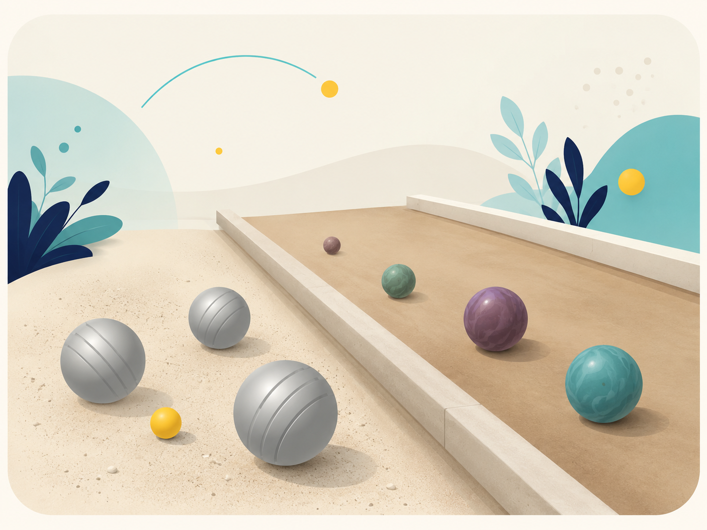

Loisir et compétition
Retrouve ici les concours, les rencontres, les résultats et la vie du club autour de la pétanque.
Bienvenue sur le site de l’Amicale Bouliste Heulinoise. Le club fait vivre la pétanque et la boule nantaise dans un esprit de convivialité, de rencontre et de passion partagée.

Retrouve ici les concours, les rencontres, les résultats et la vie du club autour de la pétanque.
Le site met aussi à l’honneur la boule nantaise, discipline emblématique du club et de son identité locale.
Actualités, événements, photos et informations pratiques sont accessibles rapidement sur toutes les pages du site.
Cette version 4 garde la structure du site tout en améliorant la page d’accueil avec une illustration plus fidèle à l’identité du club.
Le visiteur comprend désormais dès l’arrivée que l’Amicale Bouliste Heulinoise fait vivre à la fois la pétanque et la boule nantaise.
Découvrir le clubAjouter les dates réelles des concours, rencontres et manifestations du club.
Publier les résultats des concours et les comptes-rendus importants de la saison.
Remplacer les emplacements par les vraies photos du club, de la pétanque et de la boule nantaise.
Découvre le club à La Chapelle-Heulin et viens partager un moment convivial.